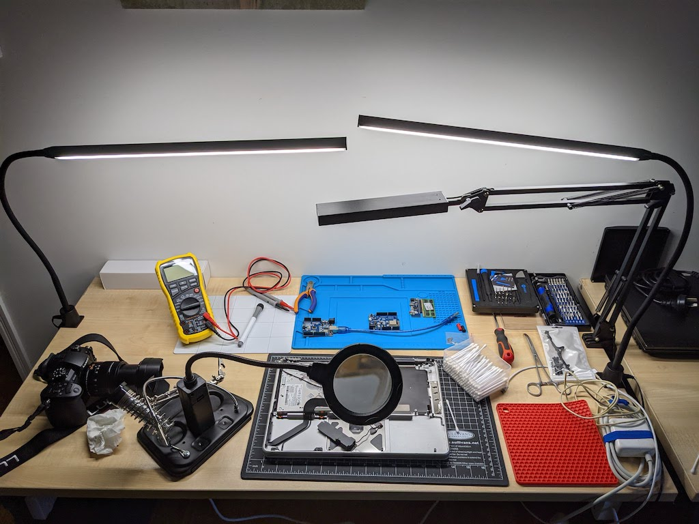
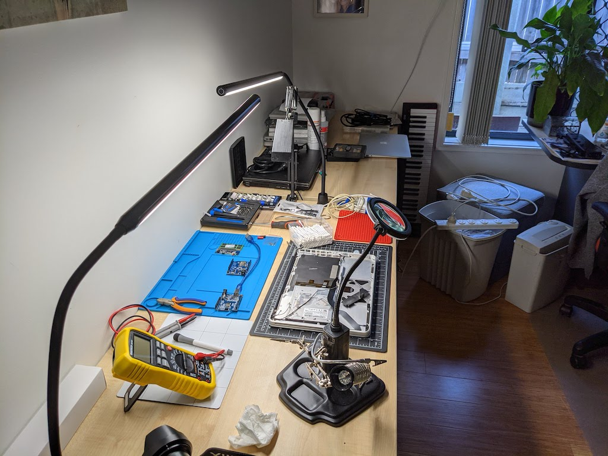

Repairing Anything Mac
Why Repairs? and why on Macs?
Some time ago, I bought a used Macbook Pro 2012 for AUD$995.00 plus shipping. As I had read up on Macbooks in general, this particular model stood out as a great system for upgrading. It already had a 500gig SSD (vs HDD) but I needed more space to edit video, so I took out the optical drive, got a caddy to hold another SSD and installed a second drive.
And realised that doing this was fun.
Then Julia dropped her 2011 Macbook Pro, one I’d purchased for $500. The keyboard was what had suffered the most damage, interestingly. Replacing the keyboard on the unibody meant pulling everything out. And having this repair done would have cost well over $200.
Too daunting.
Well, I finally pulled the machine down from the cupboard - where it had been sitting for almost two years - and pulled it apart. Purchased a new keyboard on eBay for $35 and did the replacement.
The machine works beautifully!
So, that’s what got me started.
2021.Sep.25
The multimeter (that yellow thing with the knob on it) is, at this point, only there to impress. I haven’t actually gotten around to figuring out how it will help me decide what components are defective and need replacing.
Julia got those two tables for free from work… they’re moving to smaller quarters and needed to unload stuff.
The Macbook Air (2015) failed as well… the logic board played up and finally refused to work. Got a replacement on eBay for $250… and the seller gave me $50 back for the non-working board! Win-win!